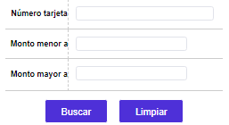
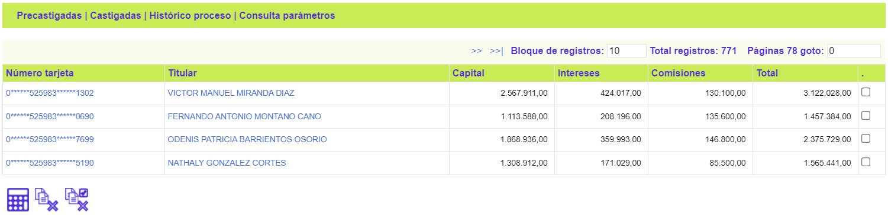

|
Castigo de cartera |
Mediante esta función se efectúa el proceso de precastigo y castigo de los productos que se encuentran previamente candidatizados.
Filtro: El formulario cuenta con un filtro inicial de búsqueda, necesario para la consulta de la información:

|
Número tarjeta |
El campo número tarjeta admite cualquier dato alfanumérico de máximo 23 caracteres. Permite mayúsculas y minúsculas |
|
Monto menor a |
Este campo admite cualquier dato numérico de máximo 16 dígitos, 14 enteros y dos decimales. La validación se hace al utilizar el botón Siguiente |
|
Monto mayor a |
Este campo admite cualquier dato numérico de máximo 16 dígitos, 14 enteros y dos decimales. La validación se hace al utilizar el botón Siguiente |
Candidatas: Éste es el primer formulario que muestra esta opción. A través del proceso de facturación y de acuerdo con los parámetros de la opción productos del módulo de mercadeo, se alimenta esta formulario con los productos que cumplen con dichas condiciones susceptibles de pasar a un proceso de precastigo y posteriormente a castigo de acuerdo con las políticas de recaudo de la entidad.
El formulario contiene las siguientes opciones: Precastigadas, Castigadas, Histórico proceso, y Consulta de parámetros.

|
Número tarjeta |
Presenta los productos que han cumplido con las condiciones para ser candidatos a precastigo. |
|
Titular |
Contiene el nombre del cliente principal del producto. |
|
Capital |
Informa el valor del capital que el cliente trae vencido, el mismo que se considerará en el momento de realizar el precastigo. |
|
Intereses |
Despliega el valor los intereses (corrientes y moratorios) que el cliente posee como saldo, el mismo que se considerará en el momento de realizar el precastigo. |
|
Comisiones |
Señala el valor las comisiones que el cliente presenta como saldo, el mismo que se considerará en el momento de realizar el precastigo. |
|
Total |
Muestra el total de la deuda (capital mas intereses y comisiones) correspondientes al cliente candidato al precastigo. |
|
Seleccionar |
Esta casilla permite a la entidad seleccionar a todos aquellos clientes que ésta desea pasar al proceso de precastigo. |
Adicionalmente, el formulario cuenta con los siguientes botones:
|
Calcular totales: Botón que permite a la entidad disponer de datos estimados relacionados con la cantidad de tarjetas, los valores de capital, intereses y comisiones respecto de las tarjetas seleccionadas para surtir la correspondiente etapa. |
|
|
Precastigar tarjetas seleccionadas: Permite iniciar el proceso de castigo para aquellas tarjetas que han sido seleccionadas. |
|
|
Precastigar todas tarjetas: Permite iniciar masivamente el proceso, para todas las tarjetas que requieren hacer transito hacia determinada etapa del proceso de castigo. |
Calcular totales: Luego de presionar el botón especial calcular totales aparece otra forma donde muestra la siguiente información, correspondiente a las tarjetas que hayan sido marcadas o seleccionadas:
|
Número tarjetas |
Corresponde a la cantidad de tarjetas que se encuentran seleccionadas para ser precastigadas. |
|
Capital a precastigar |
Muestra el valor correspondiente a la suma de la deuda de los clientes por concepto de capital que pasan al proceso de precastigo. |
|
Intereses a precastigar |
Registra el valor correspondiente a la suma de la deuda de los clientes por concepto de intereses (corrientes y de mora) que pasan al proceso de precastigo. |
|
Comisiones a precastigar |
Indica el valor de las comisiones que el cliente presenta y que pasan al proceso de precastigo. |
| Valor total |
Este campo muestra el valor correspondiente a la suma total de la deuda de los clientes por concepto de capital más intereses y comisiones que pasan al proceso de precastigo, con el fin de informar a la entidad acerca del monto total que pasará a dicho proceso. |
Precastigadas | Castigadas | Histórico proceso | Consulta de parámetros